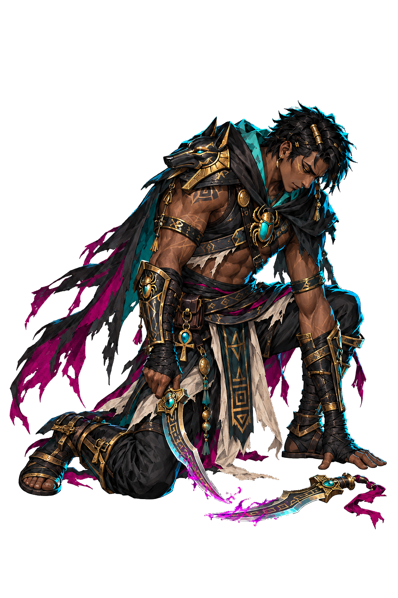
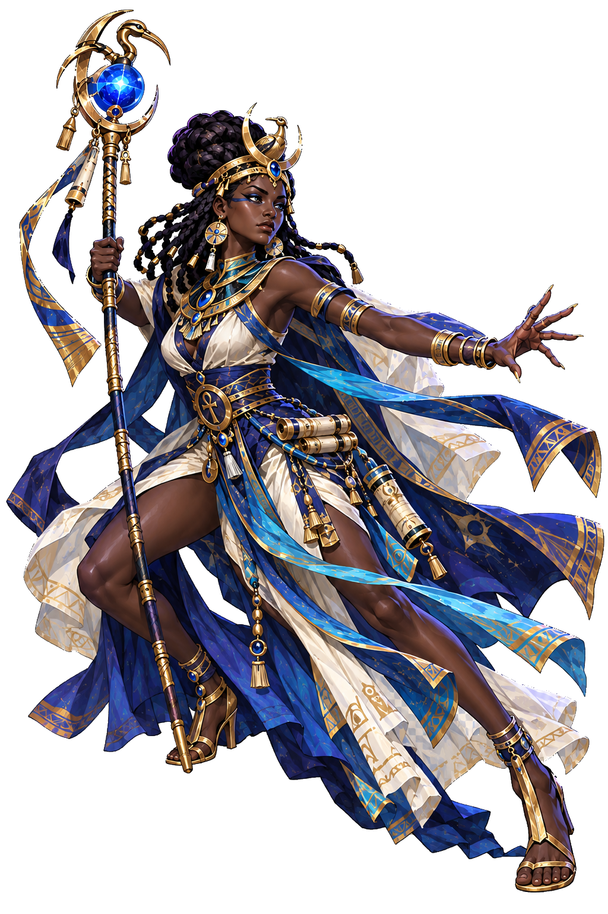
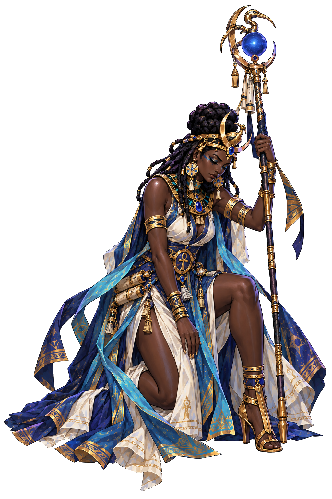
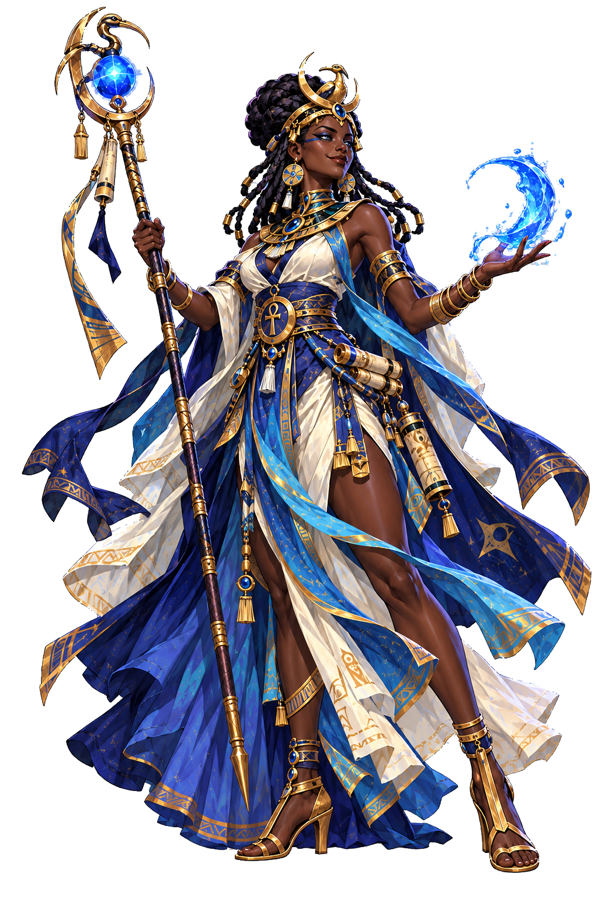
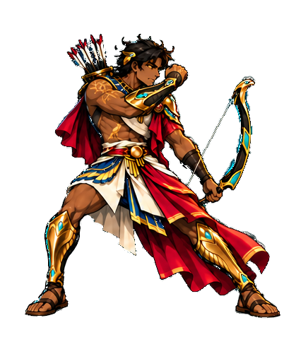
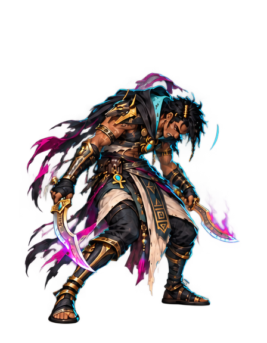
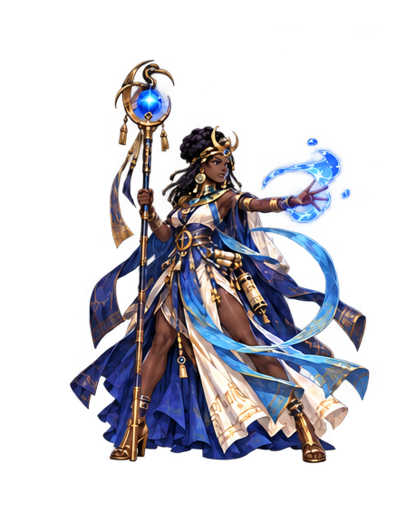

Transparent character poses
Seven actual PNG exports. Four original-reference revisions and three extracted source frames. Each image is repeated on contrasting backgrounds so edges and genuine transparency are visible.
Rogue · defeat
duat_hero_rogue_defeat
DarkIvoryGreenMagician · dodge
duat_hero_magician_dodge
DarkIvoryGreenMagician · defeat
duat_hero_magician_defeat
DarkIvoryGreenMagician · victory
duat_hero_magician_victory
DarkIvoryGreenArcher · guard
duat_hero_archer_guardUp
DarkIvoryGreenRogue · hurt
duat_hero_rogue_hurt
DarkIvoryGreenMagician · follow-through
duat_hero_magician_follow
DarkIvoryGreen